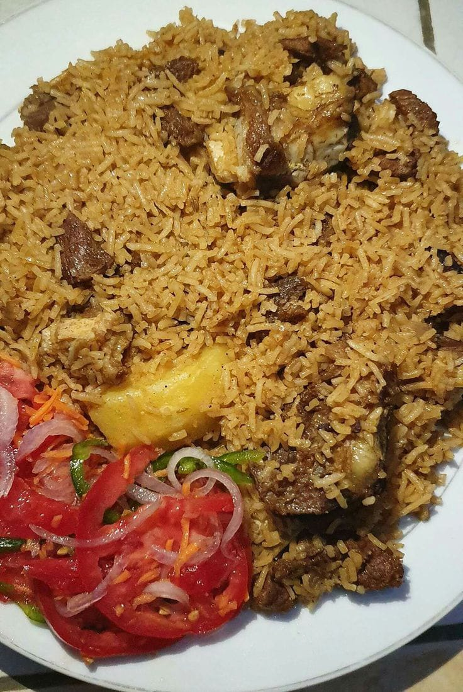

Beef Pilau with Chicken Stew and Kachumbari
I love this meal because the spiced beef pilau pairs perfectly with rich
chicken stew and fresh kachumbari, creating a balance of savoury, spicy,
and refreshing flavours.

Ingredients
Beef Pilau
- 2 cups (400 g) basmati or long-grain rice
- 500 g beef, cut into cubes
- 2 large onions, thinly sliced
- 4 cloves of garlic, crushed
- 1 tablespoon fresh ginger, grated
- 2 tablespoons pilau masala
- 1 teaspoon ground cumin
- 1/2 teaspoon black pepper
- 1 small cinnamon stick
- 4 cardamom pods
- 5 whole cloves
- 2 medium potatoes, peeled and quartered
- 3 tablespoons cooking oil
- 4 cups (about 950 ml) beef stock or water
- 1 1/2 teaspoons salt
Chicken Stew
- 750 g chicken, cut into pieces
- 1 large onion, chopped
- 3 medium tomatoes, chopped
- 3 cloves of garlic, crushed
- 1 teaspoon fresh ginger, grated
- 2 tablespoons cooking oil
- 1 tablespoon tomato paste
- 1 teaspoon curry powder
- 1 teaspoon paprika
- 1/2 teaspoon black pepper
- 1 1/2 cups (350 ml) chicken stock or water
- 1/4 cup fresh coriander, chopped
- 1 teaspoon salt
Kachumbari
- 3 medium tomatoes, sliced
- 1 medium red onion, thinly sliced
- 1 green chilli, finely chopped
- 1/4 cup fresh coriander, chopped
- Juice of 1 lemon or lime
- 1/2 teaspoon salt
Preparation
Beef Pilau
-
Wash the rice thoroughly with cold water until the water runs clear,
then drain and set it aside.
-
Place the beef in a pot with a little water and boil until tender.
Drain the beef, but keep the beef stock for cooking the rice.
-
Heat the cooking oil in a large pot over medium heat. Add sliced
onions and fry until they turn golden brown.
-
Add the crushed garlic and grated ginger. Stir for about 1 minute
until they release their aroma.
-
Add the pilau masala, cumin, black pepper, cinnamon stick, cardamom
pods, and cloves. Stir for about 30 seconds to release the aroma of
the spices.
-
Add the cooked beef and fry it with the onions and spices for about
5 minutes.
-
Add the quartered potatoes and stir gently until they are coated
with the spice sauce.
-
Add 4 cups of the reserved beef stock or water and the salt. Bring
the mixture to a boil.
-
Add the drained rice and stir gently once to distribute everything
evenly.
-
Reduce the heat, cover the pot, and allow the pilau to simmer until
the rice is cooked and the liquid has been absorbed.
-
Turn off the heat and let the pilau rest, covered, for about 5
minutes. Fluff the rice gently with a fork before serving.